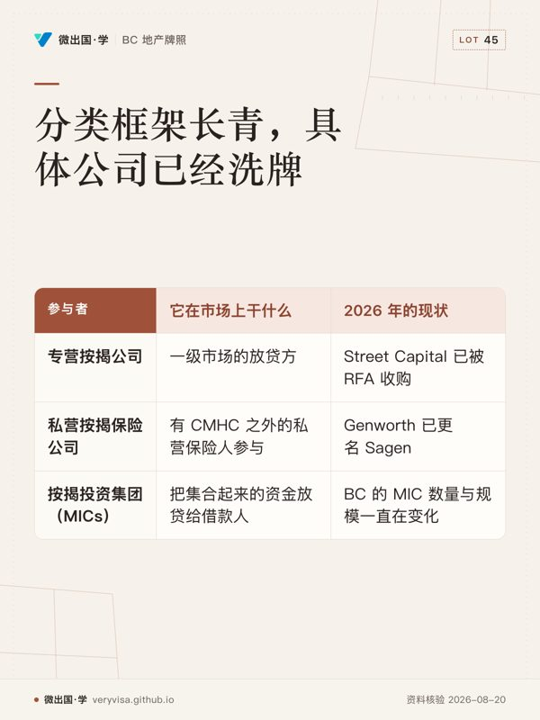

🃏 Flashcards · 3 闪卡 · 3 张 🖼 Slides · 2 幻灯 · 2 页 ✍️ Questions · 10 刷题 · 10 道
按揭金融 mortgage-finance P2 稳住 P2 Hold steady
ZH EN ZH + EN
先看这一章怎么考 First, how this chapter is tested
换算辨析题：给出带复利频率的名义利率，考你会不会把按半年复利的 j₂ 直接除以 12 当月利率，以及两个复利频率不同的报价必须先换成等价年利率再比谁贵。 Conversion questions give a nominal rate together with its compounding frequency. They test whether you divide a semi-annually compounded j₂ by 12 and treat the result as the monthly rate, and whether two quotes with different compounding frequencies must first be converted to effective annual rates before you compare which one costs more. 还款结构题：用一段现金流（期间不付、每期只付利息、等额本金加递减利息、或每期总额固定），考你归入哪一种还款计划，并判断摊还期与合同期是否同一天还清、到期有没有尾款。 Repayment-structure questions give a cash flow (nothing paid during the term, interest only each period, equal principal plus declining interest, or a fixed total each period). They test which repayment plan you place it in, and whether the amortization period and the term pay the loan off on the same day or leave a balance owing at maturity. 法条边界题：用个人或公司借款人、合同是否超过五年、利率有没有按年或半年复利写明，考《利息法》s.6 不能收息和 s.10 满五年后个人可加三个月利息提前还清，两条都问适用边界。 Statutory-boundary questions use an individual or a corporate borrower, whether the contract runs longer than five years, and whether the rate is stated as compounded annually or semi-annually. They test Interest Act s.6 (no interest at all may be collected if the compounding disclosure is missing) and s.10 (after five years an individual may prepay in full by adding three months' interest), and in both cases where the section's boundary lies. 最常丢分的陷阱（看到题干信号就警觉） Traps that cost the most marks (watch for the signal in the stem)
年利率除以十二 Dividing the annual rate by twelve 题干写了 compounded semi-annually 或 j₂，同时又是 monthly payments，选项里出现 divide by 12 或 0.5%。 The stem says compounded semi-annually or j₂, and also monthly payments, and an option contains divide by 12 or 0.5%. 名义数字直接比 Comparing the nominal figures directly 两个百分数很接近，一个写 semi-annually，另一个写 monthly，题目问哪一家真实年成本更低。 Two percentages sit close together. One says semi-annually and the other says monthly, and the question asks which one has the lower true annual cost. 摊还期当成还清日 Treating the amortization period as the payoff date 同一题里同时出现 amortization period 和 term，并问合同到期还要不要付余额、续约或转贷。 The same item contains both amortization period and term, and asks whether a balance must still be paid when the contract ends, or whether the loan must be renewed or moved to another lender. 本章考点页：导图、要点表、7 道带逐项解析的练习 →
本章地位 ：按揭金融五章（ch13–ch17）的开篇，讲原理 ——为什么地产交易离不开负债、
资本市场怎么运作、按揭市场有哪些参与者、还款计划有哪几种谱系、名义利率与周期利率怎么换算。
核贷条件、压力测试、保险按揭现行规则 在 ch17 展开，本篇只带过一句；
摊还表全表计算 在 ch14/ch16 展开，本篇只讲清楚换算原理并算到底两个自设示例。
核实日期：2026-09-05 ，出处见文末源表。
一、这一章要回答的问题：钱从哪儿来 本节回答 This section answers 购房缺口靠负债，按揭是产权担保 Debt fills the purchase gap, and a mortgage is security on title.
买一套房子，付的是一次性的一大笔钱，换来的是未来几十年分期兑现的好处——自己住省下的房租，
或者出租收到的租金。买家很少能一次性拿出全款，卖家也很少愿意等买家慢慢攒够钱。
这个缺口只有一个办法能补上：负债。 于是几乎每一笔地产交易背后都站着两类投资人——
业主投资人 （出的是自有资金 equity，图的是使用权、租金回报、增值）和
贷款人投资人 （出的是借款 debt，图的是利息与本金按约定收回）。
图：按揭金融导论——为什么地产交易离不开负债
贷款人要的东西很简单也很挑剔：利息要按时收到，本金要能收得回来 。
当贷款人为保证收回本金而在借款人的产权上设定了一项权利——一旦借款人违约，
贷款人有权在清偿在先债权后接管这项产权——这项借款就叫按揭（mortgage） 。
按揭不是唯一的地产融资方式（还有分期付款合同 agreement for sale、售后回租、股权合伙等），
但它是目前最常见的一种，这也是这五章考试口径专门给它开辟五章篇幅的原因。
ℹ️
「考试口径是结构，不是真相」在这一章最直接的体现
这一章几乎全是金融原理 ：一级市场／二级市场的划分、按揭作为投资的特征、
还款计划的谱系、名义与周期利率的换算——这些是数学关系与市场机制，
本身不会因为哪部法律修订而改变 ，所以这一章要留心的不是「考试口径哪句话过时了」，
而是考试口径举的具体公司名字 ：市场参与者一直在并购、改名、退出，
考试口径©2020 举的例子到 2026 年已经有几个不在了（见下文第三节）。
节末检索小测 · 先别往回翻，凭记忆作答 Quick recall check: answer from memory before scrolling back
A buyer pays part of the price from savings. A lender advances the rest and takes a right on title: if the buyer defaults, the lender may take over the property after charges that rank ahead are paid. What is this borrowing, and what is each party putting in?
买家用积蓄付一部分房价，贷款人付出其余款项，并在产权上取得一项权利：买家一旦违约，贷款人可在清偿顺位在前的债权后接管该物业。这是什么借款？双方各出的是什么？
a It is a sale by instalments, so the lender is the owner from the first day and the buyer's savings are only a deposit. ✗ 错误。分期付款合同（agreement for sale）是另一种地产融资方式。本题是贷款人在借款人产权上设定担保权利，讲义把这种借款定义为按揭（mortgage），不是从第一天起把所有权过给贷款人。 Wrong. An agreement for sale is a different way to finance real estate. Here the lender takes a security right on the borrower's title. The materials define that borrowing as a mortgage. It is not a transfer of ownership to the lender from the first day.
b A mortgage. The buyer's savings are equity; the lender is a debt investor seeking timely interest and the return of principal. ✓ 正确。资金缺口靠负债补上。出积蓄的是业主投资人（equity investor），图的是使用权、租金或增值；出借款的是贷款人投资人（debt investor），图的是利息按时收到、本金按约定收回。为收回本金而在产权上取得的这项权利，就是按揭（mortgage）。 Correct. Debt fills the funding gap. The person who puts in savings is the equity investor, and wants occupancy, rent, or appreciation. The person who advances the loan is the debt investor, and wants interest received on time and principal returned as agreed. The right taken on title so that the principal can be recovered is the mortgage.
c It is equity contributed by the lender, so the lender's return is occupancy, rent, and appreciation rather than interest. ✗ 错误。把贷款人说成了业主投资人（equity investor）。贷款人出的是借款（debt），回报是利息和收回本金，不是自己去住、收租或吃增值。 Wrong. This calls the lender an equity investor. What the lender puts in is debt. The return is interest and the recovery of principal, not living in the property, collecting the rent, or taking the appreciation.
d It is a trade in the secondary market, so the lender is buying an already existing mortgage rather than creating a new one. ✗ 错误。贷款人直接把新的钱借给购房者并取得产权上的权利，这是创设一笔新按揭。买卖已经存在的按揭、买的是未来还款权，才是二级市场。 Wrong. The lender advances new money directly to the home buyer and takes a right on title. That creates a new mortgage. Buying a mortgage that already exists, which means buying the right to future payments, is the secondary market.
看答案与每个选项的解析 Show the answer and why each option is right or wrong 答案 Answer ：b
二、资本市场：储蓄者与借款人怎么被撮合到一起 本节回答 This section answers 利率撮合储蓄，非利率条件消化风险 The interest rate matches savings to borrowers, and non-rate terms absorb risk.
任一时间段里，经济中总有一部分人（或机构）当期收入超过当期支出——储蓄者 ；
也总有另一部分人当期支出超过当期收入——借款人 。资本市场 就是撮合这两群人的机制，
按揭市场只是资本市场里的一个分市场，和股票、债券、定存、外汇一样，
在争夺同一批储蓄者的资金。
储蓄者把钱交给借款人，通常走三条路径：直接借贷 （父母借钱给子女买房）、
经纪撮合 （按揭经纪人找到想投资的人和想融资的开发商）、存款中介
（储户把钱存进银行，银行再把钱贷给买车的人）——第三条是当代最主流的路径。
利率是这场撮合的价格：对借款人是成本 ，对储蓄者是回报 。当按揭市场的资金需求上升，
利率会被推高，从而把资金从资本市场的其他角落（债券、股票）吸引过来；
需求下降时反过来。因此按揭利率从不是孤立定出来的 ，它和整个资本市场的利率水平互相牵动。
在这套利率结构里，风险与期限决定相对高低 ：政府公债违约风险几乎为零，利率最低；
按揭的承诺可靠性不如政府，且流动性差、管理成本高，所以同期限的优质第一按揭利率通常高于政府公债收益率 ；
二按、三按风险更高，利率还要再往上加。贷款人给一笔按揭定价时，实际在综合三样东西：
资金本身的机会成本 （市场当期利率水平）、对承担这笔具体风险的补偿 、
管理这笔贷款的成本分摊 。这也是为什么同样是"按揭"，看物业类型（自住 vs 收益型 vs 商业用地）、
看借款人信用、看抵押物估值比例，报价会不一样——但多数贷款机构不会为单笔贷款单独调利率 ，
更常见的做法是维持统一的市场利率，转而在非利率条件 （期限、摊还年限、要不要保险）上做文章
来消化风险差异。
节末检索小测 · 先别往回翻，凭记忆作答 Quick recall check: answer from memory before scrolling back
On the same day, one borrower wants a first mortgage on an owner-occupied house and another wants a first mortgage on a commercial site. The institution posts one market rate for both and instead varies the term, the amortization, and whether insurance is required. Which statement matches the course?
同一天，一位借款人要自住房的第一按揭，另一位要商业用地的第一按揭。机构对两笔都挂同一个市场利率，改的是期限、摊还年限和要不要保险。哪一项符合课程？
a It does not match. Every institution must set a separate interest rate for each loan and may not use non-rate terms to handle risk. ✗ 错误。方向反了。讲义说多数贷款机构不会为单笔贷款单独调利率，更常见的是维持统一的市场利率，用非利率条件消化风险差异。 Wrong. The direction is reversed. The materials say most lending institutions do not set a separate rate for a single loan. The usual practice is to keep one market rate and absorb differences in risk with non-rate terms.
b It matches only because a commercial mortgage is a government bond and must carry the lowest rate in the capital market. ✗ 错误。政府公债违约风险几乎为零，所以利率最低。商业用地按揭不是公债，同期限的优质第一按揭利率通常还高于政府公债收益率，二按、三按还要再高。 Wrong. A government bond has almost no default risk, so its rate is the lowest. A mortgage on commercial land is not a government bond. A high-quality first mortgage of the same term usually yields more than a government bond, and second and third mortgages are higher still.
c It matches. Most lenders keep a common market rate and use non-rate terms, such as term, amortization, and insurance, to absorb differences in risk. ✓ 正确。定价综合的是资金机会成本（opportunity cost）、这笔风险的补偿和管理成本。物业类型、信用和估值比例不同，报价可以不同，但多数机构不按单笔改利率，而在期限、摊还年限、要不要保险上做文章。 Correct. The price combines the opportunity cost of the funds, the risk premium for this risk, and the administration cost. Property type, credit, and the ratio of the loan to value can change the quote, but most institutions do not change the rate loan by loan. They adjust the term, the amortization period, and whether insurance is required.
d It matches because parents lending to children has replaced deposit-taking institutions as the usual path for mortgage funds. ✗ 错误。父母借钱给子女是直接借贷，只是三条路径之一。当代最主流的是存款中介（deposit intermediary）：储户把钱存进机构，机构再贷出去。 Wrong. Parents lending to their children is direct lending, and that is only one of the three paths. The dominant path today is the deposit intermediary: the saver deposits money with the institution, and the institution lends it out.
看答案与每个选项的解析 Show the answer and why each option is right or wrong 答案 Answer ：c
三、按揭市场的参与者：考试口径举的公司名，2026 年还剩几个 本节回答 This section answers 分清一级创设与二级买卖还款权 Separate the creation of a new loan in the primary market from the buying and selling of payment rights in the secondary market. 本章考题 5 Question 5
按揭市场分一级市场 （贷款人直接把钱借给购房者，形成新的按揭）和二级市场
（已经存在的按揭被当作金融资产买卖，买家买到的是收取未来还款流的权利）。
政府推出的按揭担保证券（Mortgage-Backed Securities, MBS） 与
Canada 按揭债券（Canada Mortgage Bonds, CMBs） 这类工具，就是为了让小额投资人也能间接参与二级市场，
不必自己去找、去管一整笔按揭。
一级市场的放贷方，按来源可以分成几类，这套分类框架长青 ，但框架里点名的具体公司在 2026 年已经洗了一轮牌：
这张表最容易踩的坑不是记错分类，是把考试口径举的公司名当成现在还存在的公司照抄给客户。
分类框架（机构贷款人 / 专营按揭公司 / 保险公司 / 私人贷款人 / 政府）是长青知识，
具体点名哪家公司，2026 年要用现行名字 。
⚠️
「Genworth」这个旧名出现在客户面前，该怎么办
如果客户拿着一份旧资料问「Genworth 保险是什么」，正确的反应不是照本宣科，
而是告诉客户：这是 Sagen 的曾用名，公司还在，只是换了牌子 。
考试口径举的例子只当历史读；卷面 上如果考「私营按揭保险公司有哪几家」，
答的是这个分类事实本身（有 CMHC 之外的私营保险人参与）而不是公司名字对错；
实务 上给客户提供联系方式或产品资料，必须用现行公司名，用错名字客户联系不到人。
按揭投资集团（Mortgage Investment Corporations, MICs）值得单独说一句：投资人买 MIC 的股份，
MIC 把集合起来的资金放贷给借款人，《所得税法》为它设了资格规则，条件是把 100% 净收入分配给投资人 。
MICs 常年是被主流机构挡在门外的借款人（信用记录有瑕疵、自雇难验证收入、抵押物类型特殊）的重要出口，
利率高于机构贷款人，因为承担的违约风险更高、抵押物或借款人条件通常更边缘。
节末检索小测 · 先别往回翻，凭记忆作答 Quick recall check: answer from memory before scrolling back
An investor does not advance a new loan to a home buyer. The investor buys an existing mortgage and with it the right to collect the payments still to come. A second saver does not buy that whole mortgage, but buys a government-sponsored security that passes through payments from a pool of mortgages. Which statement is correct?
一位投资人并没有把一笔新贷款放给购房者，而是买下一笔已经存在的按揭，从而取得今后收取还款的权利。另一位储蓄者没有买下那一整笔，而是买了一份政府推出的、传递一篮子按揭还款的证券。哪一项正确？
a Both steps create a new mortgage in the primary market, because any money that can be traced back to a borrower counts as a newly originated loan. ✗ 错误。一级市场（primary mortgage market）是贷款人直接把钱借给购房者、形成新按揭。买下已有按揭的还款权，并没有创设一笔新贷款。 Wrong. The primary mortgage market is where a lender lends directly to a home buyer and creates a new mortgage. Buying the right to the payments on a mortgage that already exists does not create a new loan.
b The first purchase is a reverse annuity paid to the borrower, and the pooled security is the original seller taking back a mortgage. ✗ 错误。反向年金按揭（reverse annuity mortgage）是贷款人按期付钱给借款人；卖方融资（vendor take-back）是卖方自己当贷款人。两者都不是买卖存量按揭，也不是政府推出的证券。 Wrong. A reverse annuity mortgage is the lender paying the borrower on a schedule. A vendor take-back is the seller acting as the lender. Neither is a purchase or sale of an existing mortgage, and neither is a security issued by government.
c Neither step is possible. A registered mortgage may not be sold, and small savers are barred from every form of mortgage investment. ✗ 错误。二级市场就是买卖已经存在的按揭。小额投资人很难自己持有并管理一整笔，但可以通过政府推出的证券间接参与，不是被全部挡在市场外面。 Wrong. The secondary market is the buying and selling of mortgages that already exist. A small investor finds it hard to hold and service one whole mortgage, but can take part indirectly through a security issued by government. Small investors are not barred from every form of mortgage investment.
d Buying the existing mortgage is a secondary-market trade. The pooled security, such as MBS or CMBs, lets a small saver join without servicing one whole mortgage. ✓ 正确。二级市场（secondary mortgage market）买卖的是已经存在的按揭，买家买到的是收取未来还款流的权利。按揭担保证券（Mortgage-Backed Securities, MBS）和加拿大按揭债券（Canada Mortgage Bonds, CMBs）就是让小额投资人间接参与、不必自己去管一整笔按揭的工具。 Correct. The secondary mortgage market buys and sells mortgages that already exist, and the buyer acquires the right to collect the stream of future payments. Mortgage-Backed Securities (MBS) and Canada Mortgage Bonds (CMBs) are the tools that let a small investor take part indirectly without servicing one whole mortgage.
看答案与每个选项的解析 Show the answer and why each option is right or wrong 答案 Answer ：d
四、按揭作为一种投资：五个特征，决定了谁会来放贷 本节回答 This section answers 五特征让大机构主导直接放贷 The five features are why large institutions dominate direct lending.
从贷款人的角度看，按揭这种投资天生带着五个特征，理解它们能解释为什么这个市场
由少数大机构主导，小投资人很难直接参与 ：
独一无二（unique） ：每一笔按揭的风险取决于借款人信用、抵押物状况、合同条款三样的
独特组合，不像政府公债那样彼此可以互换。难以转手（illiquid） ：二级市场虽然存在（MBS/CMB），但一笔具体的按揭要单独找买家、
议价、过户，远比卖一张公债麻烦。再投资难题 ：借款人每月还的钱是本金加利息的小额流水，大机构 手上有成百上千笔按揭，
凑起来能立刻放出新的按揭；小投资人 手上只有一两笔，每月收到的小额还款只能先存进
利息更低的储蓄账户，等积攒够了才能放出下一笔——这段等待期里，实际到手的收益率被拉低。管理成本高 ：放款前要评估、要做法律文件、要看地契；放款后要按月对账、追缴逾期，
这些行政成本不会因为贷款规模小而等比例缩小，大机构靠规模摊薄单笔成本，小投资人摊不了 。资本门槛高 ：要放出一笔完整的按揭动辄要几万到几十万，很多有意愿的储蓄者根本凑不出这个数。
这五条合在一起解释了这个市场的现实形状：一头是大批小投资者根本进不来，
中间是少数中等规模的参与者，另一头是数量不多但资金规模巨大的机构在主导 。
MBS、CMB 与 MIC 这些工具存在的意义，正是把小投资人的钱间接 引进这个市场——
买一份 MBS 份额或 MIC 股份，等于买到了一篮子按揭的收益权，而不必自己去扛
上面五条难题里的任何一条。
节末检索小测 · 先别往回翻，凭记忆作答 Quick recall check: answer from memory before scrolling back
A private investor holds one small mortgage and still has to pay for the appraisal, the legal documents, the title review, the monthly reconciliation, and the collection of arrears. Those tasks do not shrink in proportion to the small balance. A large lender spreads the same kinds of tasks over many loans. Which course conclusion fits?
一位私人投资人只持有一笔小额按揭，仍要付评估、法律文件、看地契、按月对账和追缴逾期的成本。这些事务并不因为余额小就等比例变少。大机构则把同类事务分摊到很多笔贷款上。哪一项符合课程的结论？
a Administration cost does not shrink with a small loan. Together with the other four features, this is why a few large institutions dominate direct lending. ✓ 正确。管理成本高是五个特征之一：行政成本不会因为贷款规模小而等比例缩小，大机构靠规模摊薄单笔成本，小投资人摊不了。再加上独一无二、难以转手、再投资难题和资本门槛，市场呈一头小投资人进不来、另一头少数大机构主导的形状。 Correct. High administration cost is one of the five features. Administration cost does not shrink in proportion as the loan gets smaller. A large institution spreads the cost of each loan across its volume, and a small investor cannot. Add the features that a mortgage is unique, illiquid, subject to the reinvestment problem, and subject to a high capital threshold, and the market has small investors unable to enter on one side and a few large institutions dominating on the other.
b A single mortgage is interchangeable with a government bond, so this investor's cost per dollar is lower than a bank's cost on the same work. ✗ 错误。政府公债可以彼此互换；按揭的特征是独一无二（unique），风险取决于借款人、抵押物和合同的组合。小投资人的单笔管理成本摊不薄，不是比银行更低。 Wrong. Government bonds can be substituted for one another. A mortgage is unique: the risk depends on the combination of the borrower, the security, and the contract. The small investor's administration cost on a single loan does not get spread thin. It is not lower than a bank's cost.
c The investor may skip the title review whenever the loan is smaller than a bank mortgage, so the administration cost scales down to zero. ✗ 错误。讲义没有这种豁免。放款前要评估、做法律文件、看地契，这些成本不会随金额变小而消失，所以小投资人在单笔成本上吃亏。 Wrong. The materials give no such exemption. Before the funds are advanced there must be an appraisal, legal documents, and a review of title. Those costs do not disappear as the amount gets smaller, so the small investor loses on the cost of a single loan.
d The cost gap shows that mortgage rates are set on their own and do not move when rates elsewhere in the capital market move. ✗ 错误。管理成本只是定价里的一项。按揭利率从不是孤立定出来的，它和整个资本市场的利率水平互相牵动；资金需求上升时，利率升高并把其他市场的资金吸引过来。 Wrong. Administration cost is only one item in the price. A mortgage rate is never set on its own. It moves with the level of rates across the capital market. When the demand for funds rises, the rate rises and draws funds in from other markets.
看答案与每个选项的解析 Show the answer and why each option is right or wrong 答案 Answer ：a
五、还款计划的谱系：从「只还利息」到「本息同还」 本节回答 This section answers 四种还款谁承压，摊长期月供变轻 Who bears the pressure under each of the four repayment plans, and why a longer amortization lightens the monthly payment. 本章考题 3 Question 3
按揭合同要写清楚：借多少（本金）、按什么利率算利息、多久还一次、每次还多少。
不同的还款设计，本质上是在贷款人的收款风险 与借款人的现金流压力 之间做不同的取舍：
等额本息（constant payment） 还要再分两种情形：全额摊还（fully amortized） ——
摊还期＝合同期限，到期正好还清；部分摊还（partially amortized） ——
摊还期长于合同期限，到期时还有一大笔余额（balloon payment ）要一次性偿还或续约。
BC 常见的「25 年摊还、5 年合同期」按揭就是部分摊还的典型：借款人按 25 年的节奏还款，
但只签 5 年，5 年到期时余额要么续约、要么转贷到别的贷款人。
摊还期拉长会降低每期还款额，但代价是总利息支出增加、还清时间变长 ——
这条权衡关系在 ch14 会展开到具体数字，本篇只需要记住方向：
摊还期越长，月供越轻，总利息越贵 。
✕
别替客户算精确的月供数字
摊还期、合同期、利率复利频率哪怕差一点，算出来的月供都会不一样，
而这类计算属于持牌按揭经纪或贷款机构的专业范围。持牌地产代表的职责是
帮客户理解这些概念如何影响他们的选择 ，不是替客户出具具体的贷款计算结果——
算错一个数字、客户据此做了决定，责任由你承担。
节末检索小测 · 先别往回翻，凭记忆作答 Quick recall check: answer from memory before scrolling back
A residential borrower is offered a plan that repays the same amount of principal every month, plus interest on the unpaid balance. The interest portion falls each month, so the total payment gets smaller. The borrower expects income to rise and finds the early payments too heavy. Which design is this?
一位住宅借款人拿到的方案是：每个月还同样多的本金，再加上未还余额的利息。利息部分逐月下降，所以每月总还款额越来越小。借款人预期收入会上升，却觉得前期还款太重。这是哪一种设计？
a Interest only. The principal is left untouched until the final day, and each monthly amount is interest alone with no principal in it. ✗ 错误。纯利息贷款（interest only）每期只付利息，本金到期一次还清。本题从第一期就在还等额本金，不符合。 Wrong. An interest-only loan pays interest each period, and the principal is repaid in one sum at the end. This plan repays an equal amount of principal from the first period, so it does not fit.
b Straight-line principal reduction. The heaviest payments come first, a poor fit when income is expected to rise, so it is not the usual home loan. ✓ 正确。直线本金摊还（straight-line principal reduction）每期还等额本金，加上逐期递减的利息，总还款额逐期变小。早期压力落在借款人身上；多数人预期收入逐年上升而不是下降，所以这种方式在住宅贷款里并不流行。 Correct. Straight-line principal reduction repays an equal amount of principal each period, plus interest that falls period by period, so the total payment gets smaller. The heaviest pressure falls on the borrower early. Most people expect income to rise year by year rather than fall, so this design is not popular for home loans.
c Constant payment. The total paid each month stays the same, and the interest portion becomes the larger share in the later years. ✗ 错误。等额本息（constant payment）是每期还款总额固定，早期利息占大头、后期本金占大头。本题总额逐期变小，而且利息是越来越少，不是后期利息变成大头。 Wrong. A constant payment keeps the total paid each period fixed. Interest is the larger share early, and principal is the larger share later. Here the total gets smaller each period, and the interest gets smaller, so interest does not become the larger share in the later years.
d Interest accruing. Nothing is paid until a single final sum, and that final sum is smaller than a normal monthly payment. ✗ 错误。只计息不还款（interest accruing）是期间一分钱不付，到期一次性还本付息，利息还要滚入本金再生息。本题每个月都在还本金和利息。 Wrong. Interest accruing means nothing at all is paid during the term. At the end, principal and interest fall due in one sum, and the interest is added to the principal and then itself earns interest. Here principal and interest are paid every month.
看答案与每个选项的解析 Show the answer and why each option is right or wrong 答案 Answer ：b
六、开放式与封闭式、固定与浮动，以及一串「创新」还款工具 本节回答 This section answers 开放封闭与固定浮动，变体重新分配风险 Open versus closed and fixed versus floating, and how the variants reallocate risk.
开放式（open） 按揭允许借款人随时提前还清全部或部分本金，通常只收很小的手续费，
代价是利率比同期限的封闭式按揭高；封闭式（closed） 按揭禁止或限制提前还款，
利率更低，但提前还款要付罚金——除非落进合同允许的额度，或落进《利息法》给的那道口子
（下一节详细展开）。
固定利率（fixed） 按揭合同期内利率不变，借款人图的是确定性；浮动利率（variable，
又称 adjustable） 按揭的利率随银行的基准放贷利率（prime rate）浮动，
prime rate 又跟随加拿大银行（Bank of Canada）设定的政策利率（policy interest rate） 变化——
这条链条是机制性的，长期成立 ，但政策利率本身每隔几周就可能调整一次，
具体是多少，永远以 Bank of Canada 当期公告为准，不要在材料里写死一个数字 。
一般情况下浮动利率合同利率低于固定利率合同利率（贷款人把未来利率变动的风险转嫁给了借款人），
只有在短期通胀预期急剧升高的少见时段，两者关系才会反转。
除了标准的固定/浮动等额本息按揭，市场上还有一串「变体」，各自解决一个具体的现实需求：
卖方融资（Vendor Take-Back, VTB） ：卖方自己当贷款人，通常在买家融资有缺口时使用；递增付款按揭（Graduated Payment Mortgage） ：早期还款少、逐年递增，帮暂时收入较低的
买家先进场；反向年金按揭（Reverse Annuity Mortgage, RAM） ：贷款人反过来按期付钱给借款人（通常是
已还清房贷的退休老人），到期或身故后从物业售出款或遗产中一次结清——给的是现金流，
拿走的是未来的净值 ；组合式按揭（Combination Mortgage） ：合同期内一部分固定、一部分浮动，按比例分散风险；房屋净值贷款／信用额度（Home Equity Loan / HELOC） ：以物业净值作抵押，
额度通常是估值或成交价（取低者）的一个百分比再扣掉现有按揭余额，用途不限于买房；建筑贷款（Construction Financing） ：按工程进度分批放款而不是一次付清，
通常按纯利息方式计息，开发商完工出售后一次性还清；参与型按揭（Participation Mortgage）／共享增值按揭（Shared Appreciation Mortgage,
SAM） ：贷款人换取物业未来收益或增值的一部分份额，作为让利率更低的交换条件，
市场下行时贷款人不愿意做这类安排。
这一串工具的底层逻辑相同 ：还款结构是可以在贷款人与借款人之间重新分配风险与现金流的，
标准的等额本息只是这个谱系里最常见的一点，不是唯一答案。
节末检索小测 · 先别往回翻，凭记忆作答 Quick recall check: answer from memory before scrolling back
A borrower takes a closed mortgage because its rate is lower than the open mortgage of the same term. Two years into a three-year term, the borrower wants to pay the balance off in full. The contract privilege for extra prepayment is already used up. Which statement is correct?
借款人选择封闭式按揭，因为同期限下它的利率低于开放式。三年合同期才过了两年，借款人想一次还清余额，合同里允许的额外提前还款额度已经用完。哪一项正确？
a A closed mortgage can never be prepaid. The Interest Act lets every borrower, including a company, prepay in full from the first day with nothing extra. ✗ 错误。封闭式（closed mortgage）是禁止或限制提前还款，不是绝对不能还；合同额度和《利息法》（Interest Act）的口子都是例外。该口子也不是从第一天起、对所有借款人免费开放。 Wrong. A closed mortgage prohibits or restricts prepayment. It does not make prepayment impossible. A contractual privilege and an opening in the Interest Act are both exceptions. That opening is also not free to every borrower from the first day.
b The borrower may prepay for a smaller fee than on an open mortgage, because the closed form is the one that allows prepayment at any time. ✗ 错误。把开放式和封闭式说反了。允许随时提前还清全部或部分本金、通常只收很小手续费的是开放式（open mortgage），代价是利率更高。封闭式利率更低，提前还款通常要付罚金。 Wrong. This reverses open and closed. The mortgage that allows all or part of the principal to be prepaid at any time, usually for only a small fee, is the open mortgage, and the price of that right is a higher rate. A closed mortgage has a lower rate, and prepayment usually carries a penalty.
c An open loan permits prepayment for a small fee at a higher rate; this closed loan carries a penalty unless a privilege or the Interest Act applies. ✓ 正确。开放式（open mortgage）通常可随时提前还款，利率比同期限封闭式更高；封闭式利率更低，提前还款要付罚金，除非仍落在合同额度里，或落进《利息法》（Interest Act）的口子。本题额度已用完。合同期只有三年，不属于约定五年以上才到期，s.10 那道口子本身不适用。 Correct. An open mortgage can usually be prepaid at any time, at a higher rate than a closed mortgage of the same term. A closed mortgage has a lower rate, and prepayment carries a penalty unless it still falls within the contractual privilege or within an opening in the Interest Act. Here the privilege is already used up. The term is only three years, so this is not a mortgage agreed to be payable only after more than five years, and the s.10 opening itself does not apply.
d Choosing the closed rate means the rate must float with the Bank of Canada policy rate, so no prepayment penalty can be written into the contract. ✗ 错误。固定或浮动，和开放或封闭，是两组不同的选择。浮动利率（variable rate）随银行的基准放贷利率（prime rate）变动，prime rate 再跟随加拿大银行（Bank of Canada）的政策利率（policy interest rate）。选了封闭式并不会因此变成浮动，也不能因此不付罚金。 Wrong. Fixed or floating, and open or closed, are two different choices. A variable rate moves with the prime rate, and the prime rate follows the Bank of Canada's policy interest rate. Choosing a closed mortgage does not turn the rate into a variable rate, and it does not remove the penalty.
看答案与每个选项的解析 Show the answer and why each option is right or wrong 答案 Answer ：c
七、名义利率与周期利率：《利息法》管住的那道换算题 本节回答 This section answers 名义周期与等价年利率，披露不合格禁收息 Nominal rate, periodic rate, and effective annual rate, and no interest may be collected if the disclosure fails. 本章考题 1 Question 1 本章考题 2 Question 2 本章考题 4 Question 4
按揭合同上写的利率，从来不是孤零零一个百分数，它总是带着一个"复利频率"：
「年利率 X%，按半年复利」 才是一句完整的利率陈述。这里有三个必须分清楚的概念：
名义年利率（nominal rate, 记作 j_m） ：按年报出来的那个百分数，
下标 m 表示一年复利多少次；周期利率（periodic rate, i） ：每个复利周期实际适用的利率，
i = j_m ÷ m ；等价年利率（effective annual rate, EAR，也叫 j₁） ：把周期复利效应真正滚算一年后，
相当于按年复利一次的那个百分数，EAR = (1 + i)^m − 1 ，恒 大于等于 名义年利率
（复利频率越高，两者差距越大）。
为什么必须分清楚 ：《利息法》（Interest Act, R.S.C. 1985, c. I-15）s. 6 规定，
按揭合同上的利率必须以按年或按半年复利 的方式披露，否则一分利息都不能收
（Justice Laws Website（laws-lo… ）。这条规定的历史后果是，加拿大住宅按揭市场几乎全部用 j₂（按半年复利的
名义年利率）报价 ，哪怕借款人实际是按月还款。这就制造了一个陷阱：合同上的 j₂ 数字，
不能直接除以 12 当成月利率用 ，因为半年复利和月复利是两种不同的计息节奏。
⚠️
「年利率除以 12」是最常见的算错方式
j₂ = 6.00% 不等于「月利率 0.5%」。正确做法是先求半年周期利率 i_sa = j₂ ÷ 2，
再把这个半年利率换算成等价的 月复利周期利率——见下面案例一。
差距看起来很小（零点几个百分点的零头），但按 25 年摊还乘出来，
累积的利息差不是零头。
案例一：j₂ 报价 → 月供计息用的周期利率
买家 Grace 拿到贷款机构 A 的报价：「年利率 5.90%，按半年复利」（j₂ = 5.90%），
但她的还款是按月的。要拿到真正适用于月供计算的周期利率，分两步：
第一步：半年周期利率 i_sa = j₂ ÷ 2 = 5.90% ÷ 2 = 2.95%
第二步：换算成月复利的等价周期利率
i_mo = (1 + i_sa)^(1/6) − 1
= (1.0295)^(1/6) − 1
≈ 0.4857%
（半年＝6 个月，所以指数取 1/6。）如果 Grace 图省事直接拿 5.90% ÷ 12 ≈ 0.4917% 当月利率，
会比正确值 0.4857% 偏高 ——差距虽小，但用来算几十万本金、25 年期限的月供，
偏差会被放大成实实在在的钱。
案例二：不同复利频率的报价，怎么比出真正谁便宜
Grace 同时拿到贷款机构 E（一家非银行贷款机构）的报价：「年利率 5.85%，按月复利」
（j₁₂ = 5.85%）。乍一看 5.85% < 5.90%，机构 E 似乎更便宜——但两个报价的复利频率不同，
直接比名义利率的数字是在比较两个不同的东西 。要公平比较，必须先把两者都换算成
等价年利率（EAR）：
机构 A（j₂ = 5.90%，半年复利）
EAR_A = (1 + 2.95%)^2 − 1 = (1.0295)^2 − 1 ≈ 5.9870%
机构 E（j₁₂ = 5.85%，月复利）
EAR_E = (1 + 5.85%/12)^12 − 1 = (1.004875)^12 − 1 ≈ 6.0094%
结果反直觉：名义利率更低的机构 E，真实年成本反而更高 （6.0094% > 5.9870%）。
复利频率越高，同样的名义利率滚出来的真实成本就越高——这正是为什么比较不同贷款机构的
报价时，唯一可靠的办法是把它们都换算成等价年利率再比 ，不能只看合同上印的那个百分数。
🔧
给客户的动作，不是给客户算出这道题
上面两个例子演算给你看的是原理 ：为什么名义利率不能直接拿来比、拿来当月利率用。
到了真客户面前，你的动作是提醒客户找按揭经纪或贷款机构书面确认真实的等价年利率
（APR 或 EAR）再做比较 ，而不是自己拿计算器给出一个精确数字——
这条界线在卷面 上是概念题，在实务 里是转介的边界。
《利息法》s. 10 的另一道口子 ：如果某笔以不动产作抵押的按揭（不限住宅）约定五年以上
才到期，那么从按揭日期满五年那天起，个人借款人 （法人借款人不适用这条）有权随时提前
还清全部欠款，只需额外多付三个月利息作为「提前告知」的代价 （Justice Laws Website（laws-lo… ）。
《利息法》2008-06-18 最后修订之后，这一条没有再变过 ，考试口径©2020 的描述与现行条文完全一致——
这是本章少见的一处「考试口径照抄现行法也不会错」。注意它只保护个人（individuals），
不保护公司借款人 ，且现在多数住宅按揭合同期都在 5 年以内，这条条款在实务里较少直接用上。
节末检索小测 · 先别往回翻，凭记忆作答 Quick recall check: answer from memory before scrolling back
A mortgage contract states a rate of interest but never says whether that rate is compounded annually or semi-annually. The lender still expects to collect interest. For the exam, what does the Interest Act provide?
一份按揭合同写了利率，但完全没有写明这个利率是按年复利还是按半年复利。贷款人仍然打算收取利息。按考试口径，《利息法》怎么规定？
a Section 6 requires the rate to be disclosed as compounded annually or semi-annually. If it is not, the lender is not entitled to collect any interest. ✓ 正确。《利息法》（Interest Act）s.6 规定，按揭利率必须以按年或按半年复利的方式披露，否则一分利息都不能收。因此加拿大住宅按揭几乎全部用 j₂ 报价。考试口径与现行条文一致，这一条没有因为后来的修订而改变。 Correct. Interest Act s.6 provides that a mortgage rate must be disclosed as compounded annually or semi-annually. If it is not, no interest at all may be collected. That is why almost all Canadian residential mortgages are quoted as j₂. The exam wording matches the current section. Later amendments have not changed this section.
b Section 6 allows interest only when the contract uses monthly compounding, which is why home mortgages are quoted as j₁₂. ✗ 错误。s.6 要求的是按年或按半年复利披露，不是按月。住宅按揭用 j₂ 报价，是为了符合这条规定；借款人按月还款，并不把合同改成按月复利的名义利率。 Wrong. Section 6 requires disclosure as compounded annually or semi-annually, not monthly. Residential mortgages are quoted as j₂ in order to meet that section. The borrower's monthly payments do not turn the contract into a nominal rate compounded monthly.
c Section 10 repairs a missing compounding clause by adding three months of principal to the amount still owing. ✗ 错误。这是「利息法对象看宽」里的条文串位。s.10 是满五年后个人借款人提前还清时，额外付三个月利息，不是三个月本金，也不是用来补上缺失的复利频率。 Wrong. This is the trap of applying the Interest Act too widely, and it swaps the sections. Section 10 is the extra three months' interest an individual borrower pays when prepaying in full after five years. It is not three months of principal, and it is not used to fill in a missing compounding frequency.
d Disclosure of the compounding frequency is optional, so the stated annual figure may be used unchanged as each month's periodic rate. ✗ 错误。完整的利率陈述必须带上复利频率。名义年利率（nominal rate, j_m）不能直接当成月周期利率（periodic rate），周期利率是 j_m 除以一年的复利次数 m。 Wrong. A complete statement of the rate must include the compounding frequency. The nominal rate (j_m) cannot be used directly as the monthly periodic rate. The periodic rate is j_m divided by m, the number of times the rate compounds in one year.
看答案与每个选项的解析 Show the answer and why each option is right or wrong 答案 Answer ：a
八、柜台上怎么做 本节回答 This section answers 复利先问清，还完与重谈不是同一期 Confirm the compounding first. Being paid off and having to renegotiate are not the same period.
报价上出现的 j_m，先问清楚复利频率与付款频率是否一致 ；不一致时，
提醒客户请贷款机构或经纪给出等价年利率再比较，不要自己动手算精确数字。考试口径举的公司名字，说给客户听之前先确认还在不在、叫不叫这个名字 ——
贷款机构、保险公司这个市场并购活跃，一个曾经准确的公司名，几年后可能已经不对。摊还期与合同期是两件事 ：客户问"我这笔贷款几年还完"，答的是摊还期；
客户问"我这笔贷款几年要重新谈"，答的是合同期——部分摊还按揭这两个数字不一样。提前还款条款因合同而异 ：封闭式按揭具体允许多少提前还款额度、要不要罚金，
一律回合同条文与《利息法》s. 10 的兜底权利，不要凭经验估。建筑贷款、参与型按揭、SAM 这类结构化融资 遇到了，先识别出它不是标准按揭，
转介给相应的专业人士，不要用标准按揭的逻辑去套。
节末检索小测 · 先别往回翻，凭记忆作答 Quick recall check: answer from memory before scrolling back
A buyer with a partially amortized residential mortgage asks, "In how many years is this loan paid off?" and then, "In how many years do we have to renegotiate?" What should the licensee answer, and what should the licensee not hand over?
一位买家的住宅按揭是部分摊还。他先问「这笔贷款多少年还完」，再问「多少年后要重新谈」。持牌代表应当怎样回答，又不应当交出什么？
a Both questions are answered by the contract term, and the licensee should calculate the exact monthly payment for the buyer to rely on. ✗ 错误。两问不是同一个数字。持牌代表的职责是帮客户理解概念如何影响选择，不是出具具体的贷款计算结果；算错一个数字、客户据此作了决定，责任由代表承担。 Wrong. The two questions are not the same number. A licensee's job is to help the client understand how the concept affects the choice, not to issue a specific loan calculation. If one figure is wrong and the client decides on the strength of it, the licensee bears the responsibility.
b "Paid off" is the term and "renegotiate" is the amortization. On a partially amortized loan the two words name the same date. ✗ 错误。说反了，而且部分摊还（partially amortized）里这两个日期本来就不同。问还完，答摊还期；问重新谈，答合同期。 Wrong. This reverses the two, and on a partially amortized loan the two dates are different to begin with. Asked when the loan is paid off, answer with the amortization period. Asked when it must be renegotiated, answer with the term.
c The licensee should refuse both questions and quote a policy rate from memory, because that rate is a fixed number that never changes. ✗ 错误。政策利率（policy interest rate）由加拿大银行设定，每隔几周就可能调整，永远以当期公告为准，不能凭记忆写死一个数字。两个期限问题本身应当解释清楚。 Wrong. The policy interest rate is set by the Bank of Canada and may be adjusted every few weeks. The figure to use is always the one in the current announcement. It cannot be locked in from memory. The two questions about the periods should themselves be explained clearly.
d "Paid off" is the amortization period and "renegotiate" is the term. The licensee explains that split and does not hand over a precise payment. ✓ 正确。客户问几年还完，答的是摊还期（amortization period）；问几年要重新谈，答的是合同期（term）。部分摊还这两个数字不一样。报价上的复利频率若与付款频率不一致，要请贷款机构或经纪书面确认等价年利率，代表自己不动手算精确数字。 Correct. When the client asks in how many years the loan is paid off, the answer is the amortization period. When the client asks in how many years it must be renegotiated, the answer is the term. On a partially amortized loan those two numbers differ. If the compounding frequency on the quote does not match the payment frequency, ask the lending institution or the broker to confirm the effective annual rate in writing. The licensee does not calculate the precise figure.
看答案与每个选项的解析 Show the answer and why each option is right or wrong 答案 Answer ：d
九、两个容易踩空的场景 本节回答 This section answers 高价二按是风险定价，楼花资金不作担保 A high-priced second mortgage prices risk, and the funds behind a presale project are not something to guarantee.
场景一：信用记录有瑕疵的买家 。Marco 是自雇木工，报税收入偏低难以通过银行的常规
收入验证，被两家银行拒贷。他找到一家 MIC，愿意基于房产估值（而不是他的报税收入）
放出一笔二按，利率明显高于银行按揭。这不是"MIC 在坑人"，而是风险定价的正常反映 ——
MIC 承担了银行不愿承担的验证风险，用更高的利率作补偿。持牌地产代表在这里的角色是
帮 Marco 理解这笔贷款成本更高的原因 ，并提醒他这类私人贷款通常合同期短（1–3 年），
到期需要重新安排融资，不能当成长期方案，同时把具体条款的把关工作交给他自己的
按揭经纪或律师。
场景二：新盘开发商的建筑贷款 。开发商 Cedar Homes 正在建一栋公寓楼，
贷款机构按工程进度分批放款（而不是一次性放出全款），且这笔建筑贷款是按纯利息方式计息——
开发商在施工期只需支付利息，本金留到项目完工出售后一次性偿还。持牌代表在给潜在买家
介绍楼花时，如果客户问"开发商这个项目的资金安不安全"，可以说明建筑贷款通常是第一按揭、
分期放款、纯利息计息 这套惯常结构，但具体这一个项目的贷款条件与开发商财务状况
不是持牌代表应该评估或担保的事项。
节末检索小测 · 先别往回翻，凭记忆作答 Quick recall check: answer from memory before scrolling back
A self-employed buyer was declined by two banks because reported income is hard to verify. A mortgage investment corporation offers a second mortgage based on the property value, at a rate clearly above a bank mortgage, on a short term. How should a licensee read this offer?
一位自雇买家因报税收入难以按银行的常规方法验证，被两家银行拒绝。一家按揭投资集团愿按房产估值放一笔二按，利率明显高于银行按揭，合同期很短。持牌代表应当怎样理解这笔贷款？
a The higher rate shows the loan is void. The licensee must tell the buyer this lender may not charge more than a bank would on a first mortgage. ✗ 错误。利率更高不是贷款无效。按揭投资集团（Mortgage Investment Corporation, MIC）承担了银行不愿承担的验证风险，用更高的利率作补偿，这是风险定价，不是「在坑人」。 Wrong. A higher rate does not make the loan void. A Mortgage Investment Corporation (MIC) takes on verification risk that the banks would not take, and it charges a higher rate as compensation. That is pricing for risk. It is not a scheme to take advantage of the buyer.
b It prices a risk the banks declined; explain that, note such loans usually run one to three years, and refer the terms to his own adviser. ✓ 正确。持牌代表要帮买家理解成本更高的原因，并提醒这类私人贷款通常合同期短，讲义给出的范围是 1 到 3 年，到期要重新安排融资，不能当成长期方案。具体条款交给买家自己的按揭经纪或律师把关。 Correct. The licensee helps the buyer understand why the cost is higher, and points out that this kind of private loan usually has a short term. The materials give a range of 1 to 3 years. When the term ends, the financing has to be arranged again, so it cannot be treated as a long-term plan. The specific terms go to the buyer's own mortgage broker or lawyer to check.
c The licensee should calculate the exact payment and promise that the rate will drop to the bank's posted rate after the first month on this loan. ✗ 错误。代表不替客户出具精确的还款数字，也不能承诺利率下个月变成银行挂牌利率。MIC 的利率高于机构贷款人，是因为违约风险和借款条件更边缘。 Wrong. The licensee does not issue an exact payment figure for the client, and cannot promise that the rate will become the bank's posted rate next month. An MIC's rate is higher than an institutional lender's rate because the default risk is higher and the borrower's terms are more marginal.
d The second mortgage must be priced below a government bond, because distributing all net income to investors removes the default risk on the loan. ✗ 错误。政府公债利率最低，是因为违约风险几乎为零。MIC 把 100% 净收入分配给投资人，这是《所得税法》下的资格条件，并不会把违约风险消掉，所以它的利率高于机构贷款人，而不是低于公债。 Wrong. A government bond has the lowest rate because its default risk is almost zero. An MIC distributes 100% of net income to its investors. That is a qualification condition under the Income Tax Act. It does not remove the default risk, so the MIC's rate is higher than an institutional lender's rate, not lower than the rate on a government bond.
看答案与每个选项的解析 Show the answer and why each option is right or wrong 答案 Answer ：b
术语双语对照
考试口径 vs 现行对照表 本节回答 This section answers 两处公司名已变，利息法两条并未改 Two company names have changed, and the two Interest Act sections have not.
第 3 条是提醒 ：不是每条「考试口径 vs 现行」的对照都会发现冲突，
这一条对照现行条文后，确认考试口径没有错。
节末检索小测 · 先别往回翻，凭记忆作答 Quick recall check: answer from memory before scrolling back
The course materials name one firm as an example of a monoline mortgage lender; that firm was later acquired and renamed. An exam item asks whether the monoline category is still tested. Which statement is the exam answer?
课程材料举了一家公司作为专营按揭公司的例子，这家公司后来被收购、改了名。一道考题问：「专营按揭公司」这一类是否仍在考。按考试口径应选哪一项？
a Select that the monoline category has left the exam, because the firm used as the 2020 example was later acquired and the class died with it. ✗ 错误。这是「旧名字当现行分类」陷阱。被收购改变的是那家公司的归属和名字，不是把专营按揭公司（monoline lender）从长青的分类框架里删掉。 Wrong. This is the trap of treating an old name as the current category. What the acquisition changed is that firm's ownership and name. It did not remove the monoline lender from the classification that stays in force.
b Select the current brand as the only mark, so an answer that still says monoline lender is wrong on the exam. ✗ 错误。卷面考的是分类事实，不是现行招牌对不对。把现在的公司名当成唯一得分点，会把仍然正确的类别判错。 Wrong. The exam tests the fact of the category, not whether the current brand is the right name. Treating today's company name as the only mark that scores marks a category that is still correct as wrong.
c Mark the lasting monoline category, not the old example. The acquisition changed the name a client should hear, not the class on the exam. ✓ 正确。考试要的是分类还在：专营按揭公司（monoline lender）仍是一类放贷方。举例的那家公司被收购、改名，改变的是对客户该说的现行名字，卷面考的不是新招牌。 Correct. What the exam wants is that the category is still there: a monoline lender is still a class of lender. The firm used as the example was acquired and renamed. That changes the current name to use when speaking to a client. The paper does not test the new brand.
d Select that the acquisition repealed Interest Act sections 6 and 10, so neither section is still a correct statement of the exam law. ✗ 错误。对照表确认《利息法》（Interest Act）s.6 和 s.10 在 2008-06-18 最后修订后没有再变，考试口径与现行条文一致。一家贷款公司被收购，不会废止这两条。 Wrong. The comparison table confirms that Interest Act s.6 and s.10 have not changed again since their last amendment on 2008-06-18, and the exam wording matches the current sections. The acquisition of one lending firm does not repeal those two sections.
看答案与每个选项的解析 Show the answer and why each option is right or wrong 答案 Answer ：c
源表（本篇判据）
本篇不给的数字 ：Bank of Canada 当期政策利率与银行当期 prime rate（以 Bank of Canada
当期公告为准）；BC 现有 MIC 的家数与放贷总规模（变动快）；压力测试、保险按揭 LTV／房价上限
的现行具体规则（见 ch17）。
本页知识卡 不看正文也能拿到这一节的核心内容：先看导读，再看图。点图放大，左右翻页。
放大 ⤢ 核实后可能发现公司已变，也可能确认规则没变 先看 先看唯一没变化的一行，确认对照不等于默认挑错。易漏 公司改名或被收购，不代表对应业务已经从市场消失。下一步 去讲义，把公司历史与仍有效规则分开记。详情与分享 → 
放大 ⤢ 分类框架可长期用，具体公司名要按现行状态 先看 先把角色与现状分开读：前者讲作用，后者讲名称或规模。易漏 旧公司名只适合解释历史；给客户联系方式时要核实现行名称。下一步 去练习，把名称变化和市场角色拆开判断。详情与分享 → 本站依据官方原文自撰 · 出处见正文链接